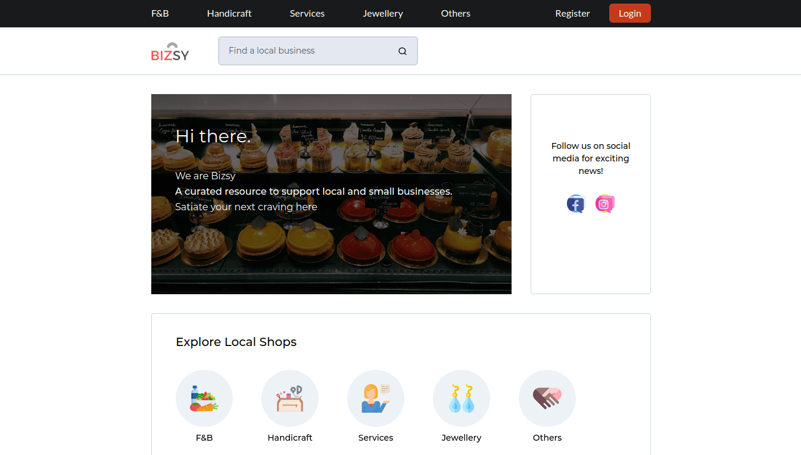
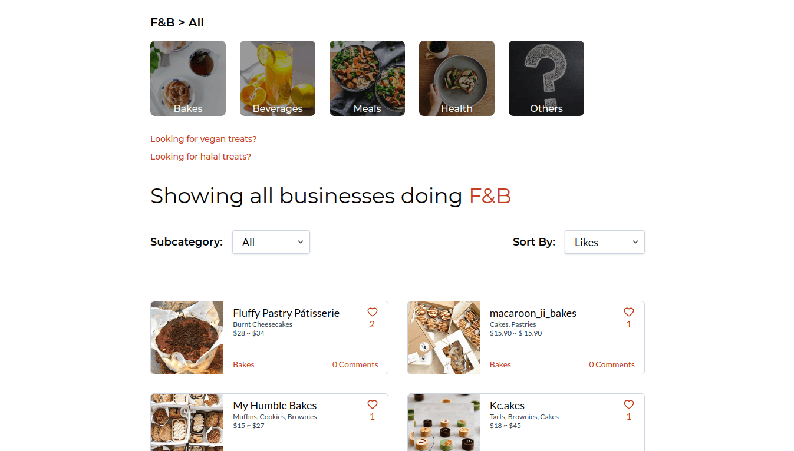
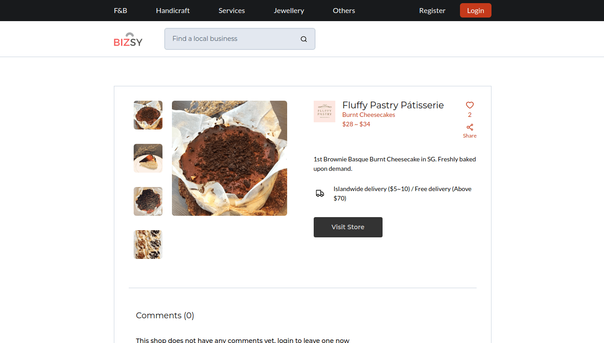

<!DOCTYPE html>
<html lang="en">
    </html>

<head>
    <meta charset='utf-8'>
    <meta name="viewport" content="width=device-width, initial-scale=1.0">
    <link rel="stylesheet" href="../../style.css">
    <link rel="stylesheet" href="https://use.fontawesome.com/releases/v5.7.2/css/all.css">
    <link rel="apple-touch-icon" sizes="180x180" href="photo/apple-touch-icon.png">
    <link rel="icon" type="image/png" sizes="32x32" href="photo/favicon-32x32.png">
    <link rel="icon" type="image/png" sizes="16x16" href="photo/favicon-16x16.png">
    <link rel="manifest" href="/site.webmanifest">   
    
    <title>Wee Yong Jie | Bizsy</title>
</head>

    <body>
        <nav role='navigation'>
            <div id='menuToggle'>
                <input type='checkbox' />
                <span></span>
                <span></span>
                <span></span>
                    <ul id='menu'>
                        <li><a href='../../index.html'>About</a></li>
                        <li><a href='../../portfolio.html'>Portfolio</a></li>
                        <li><a href='../../life.html'>Life</a></li>
                    </ul>
            </div>
        </nav>

        <div class='portfolio-inside-image'>
            <p class='portfolio-inside-title'>Bizsy.me - Empowering local businesses</p>
        </div>
    
    <div class='portfolio-inside-description'>
            <p>
                During the Covid pandemic period, a conversation with my friend sparked an idea to boost the outreach of small local businesses in Singapore
                 whom we felt were lacking the audience that they deserved. We thought of a platform where you can filter through individual unique home-grown
                  / local businesses. Over the next few months, we spent many nights and weekends on that idea and achieved the goal to have one single platform where people
                   can find the most interesting and undiscovered shops, be it shops selling cheesecakes, brownies, earrings, or even manicure services.
                <br><br>
                   Throughout this experience, I learned to prioritise product features for our MVP after analysing the top pain-points of our users. 
                <br><br>
                The website can be visited at <a href='https://www.bizsy.me'>www.bizsy.me<a>
            </p>
        </div>
    
    <div class='portfolio-inside-many-photos'>
            
            
            
        </div>

    <hr>

        <div class='row'>
            <div class='column'> <p><b>Contact</b></p> <br> <p style='font-size:12px'>Email: weeyongjie@u.nus.edu</style></div>
            <div class='column'><p><b>Follow Me</b> <br> <br>
                <a style="padding-right:12px;" href='https://www.linkedin.com/in/wee-yong-jie/'><i class="fab fa-linkedin-in" style='color:#1B1B1B'></i></a>
                <a style="padding-right:12px;" href='https://medium.com/@weeyongjie'><i class="fab fa-medium-m" style='color:#1B1B1B'></i></a>
                <a style="padding-right:12px;" href='https://www.facebook.com/yongjie.wee.1996/'> <i class="fab fa-facebook-f" style='color:#1B1B1B'></i></a>
                <a style="padding-right:12px;" href='https://www.instagram.com/yj_wee/'> <i class="fab fa-instagram" style='color:#1B1B1B'></i></a>
                </p> 
                </div>
            <div class='column'><p><i style='line-height: 30px' style='letter-spacing: 0.1em;'>“A person who is happy is not because everything is right in his life,
                 he is happy because his attitude towards everything in his life is right.” 
                                        <br>- Sundar Pichai</i></p></div>
        </div>
       
    </body>